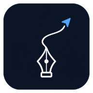

今日の学習
これからの予定
予定一覧
登録した予定と実績
絞り込み
週間の予定
日付を選んで予定を確認
考査時間割
対象の試験に、教科ごとの日時と範囲を登録
教科
教科の登録・編集・並び替え
上下ボタンで並び替え
| カラー | 教科名 | 予定時間 | 実績時間 | 操作 |
|---|
学習の統計
試験・期間・教科ごとに、準備の積み重ねを確認
実績予定
グラフの数値を表で見る
少ない多い
実績は予定の開始日に集計します。薄いマスは選択した期間の対象外です。
教科ごとの時間
集中タイマー
ブラウザを閉じる前に「終了して記録」を押してください。
バックアップ
設定・スケジュールをファイルとしてデバイスに保存
バックアップをダウンロード
3日ごとに、変更がある場合だけ保存の案内を表示します。教科・スケジュール・考査・音源設定のデータを JSON ファイルとして保存します。機種変更やブラウザを変えるときに使えます。
バックアップから復元
以前ダウンロードしたファイルを読み込みます。現在のデータは上書きされます。
試験ごとの管理
考査も模試も、1回ずつ。予定と勉強時間をまとめて管理。
その他
目覚まし・画面固定
Android版では、数学・英語・世界史の問題とNFCタグで解除する目覚ましと、集中タイマー中の画面固定を使えます。
WebとAndroidの学習データは「その他 → バックアップ」から引き継げます。
Android版をダウンロードStudyCoPiについて

StudyCoPi
バージョン 1.5.0 · Web版
予定を立てて、勉強して、振り返る。試験ごとの学習を続けるためのアプリです。
開発者
ひろかわびーち（hirokawa-beach）
ライセンス：MIT
学習データはこのブラウザに保存されます。自動同期はありません。端末の変更や削除に備えて、バックアップを保存してください。
通知設定
予定時刻の集中モード
Webを開いているときに画面内の操作を固定します。タイマーは自分で開始します。ブラウザを閉じている間の動作や、スマホ全体の固定にはAndroid版を使ってください。
アラーム音
Webでは、画面を開いている間のタイマー終了音として使います。
教科管理
教科の登録・編集・並び替え
上下ボタンで並び替え
| カラー | 教科名 | 予定時間 | 実績時間 | 操作 |
|---|
通知設定
スケジュール・考査の通知を管理
分前
教科別の試験日程
対象の試験に、教科ごとの日時と範囲を登録
使い方
予定を立てる、勉強する、振り返る。
知りたい操作を選ぶ
使い方を読み込み中です。